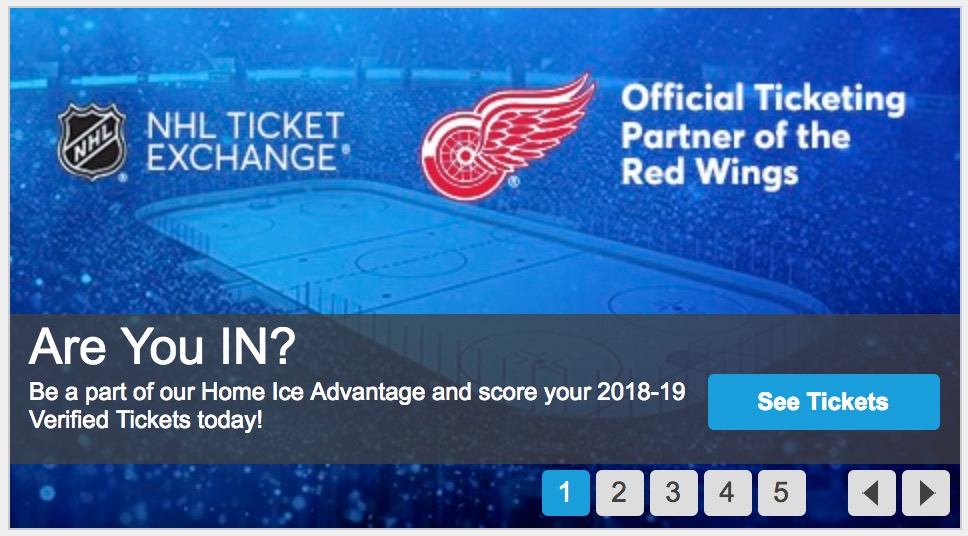

Some of My Projects
I designed an interactive web page for users to search events and updata preferences and view the recommendation by using AJAX technology. This included builting databses with MySQL and MongoDB to store user information and preference, Creating Java servlets with RESTful APIs to handle HTTP requests and responses message, designing the content-based recommendation for cold start and the user-based recommendation for improving event recommendation. I improved precision of recommendation by ordering events based on distance.
